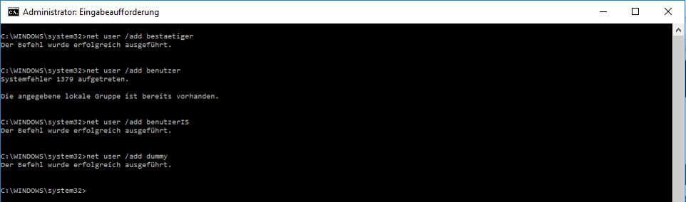
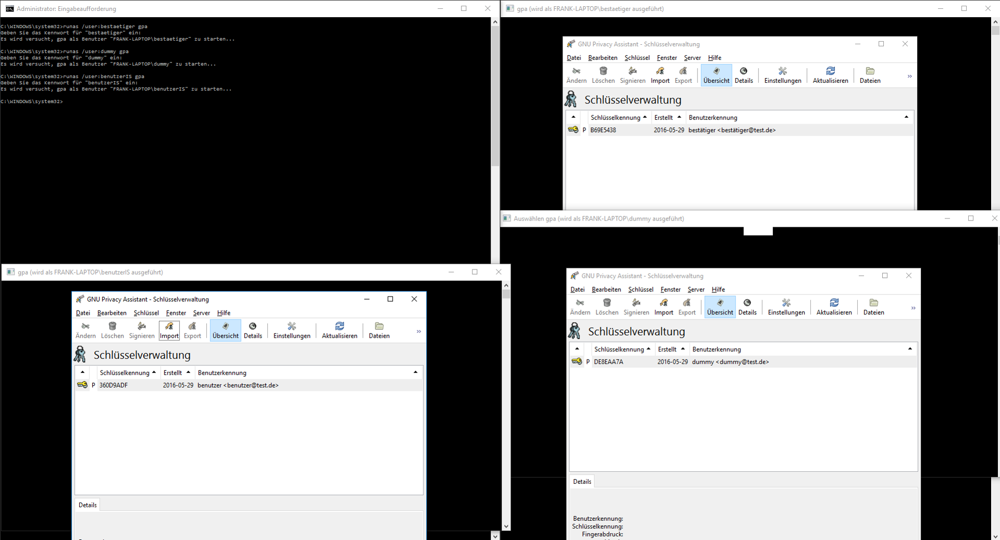
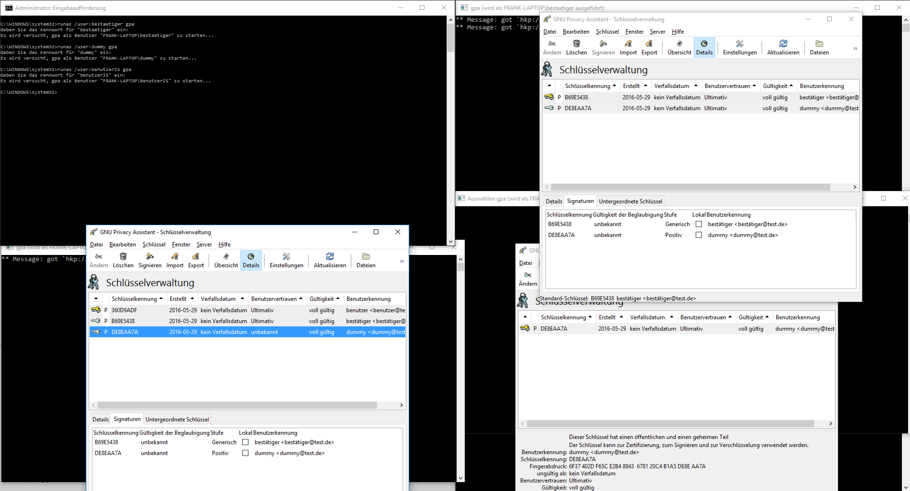

- Ein "Web of Trust" (kurz: WOT) wird fürs Schlüsselmanagement, der Weiterleitung von Schlüsseln und deren Zertifzierung verwendet.
Wenn in einem WOT ein Benutzer den Schlüssel eines anderes Benutzers vertraut, dann vertraut er auch allen Schlüssel, welche von diesem Benutzer signiert wurden.
- Zunächst erstellen wir 3 Benutzer, damit wir das WOT simulieren können.
- Unter Windows verwenden wir dazu den Befehl
net user /add <benutzername>
- 
- Dann führen wir für jeden Benutzer mit dem befehl
runas /user:<benutzername> gpa gpa (eine Graphische Öberfläche für gpg) aus und erstellen für jeden Beutzer sein Schlüsselpaar.
- So ergibt sich folgende Ausgangsituation:
- 
- Als nächses Exportieren wir nun den Public-Key(PK) von Bestätiger und importieren diesen beim Benutzer und setzen das Vertrauen auf Absolut
- Nun Exportiern wir den PK von Dummy und imporieren ihn beim Bestätiger, auch hier setzen wir das Vertrauen in den Schlüssel auf absolut.
Nun Signieren wir als Bestätiger noch den PK von Dummy.
- ALs letztes exportieren wir nun den Signierten PK von Dummy als Bestätiger und Importieren diesen beim Benutzer, der diesen Schlüssel als Gültig akzeptiert.
- So sieht das ganze nun aus:
- 